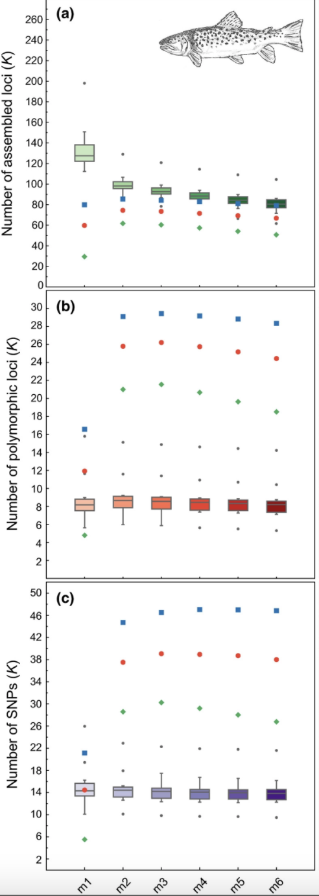

brown.trout.validation.Rmd###Bash code to execute this:
#!/bin/sh
#
#SBATCH --job-name=denovo.brown.trout # Job Name
#SBATCH --nodes=1 # nodes
#SBATCH --cpus-per-task=15 # CPU allocation per Task
#SBATCH --partition=bi # Name of the Slurm partition used
#SBATCH --chdir=/home/d669d153/work/brown.trout # Set working d$
#SBATCH --mem-per-cpu=1gb # memory requested
#SBATCH --time=10000
files="SRR5344602
SRR5344603
SRR5344604
SRR5344605
SRR5344606
SRR5344607
SRR5344608
SRR5344609
SRR5344610
SRR5344611
SRR5344612
SRR5344613
SRR5344614
SRR5344615
SRR5344616
SRR5344617"
#Must have the SRAtoolkit installed and in your path, or in my case loaded through conda
module load sratoolkit
#download each file
for sample in files
do
fastq-dump $sample
done###Bash code to execute this:
# Build loci de novo in each sample for the single-end reads only.
# -M — Maximum distance (in nucleotides) allowed between stacks (default 2).
# -m — Minimum depth of coverage required to create a stack (default 3).
#here, we will vary m from 3-7, and leave all other paramaters default
for i in {3..7}
do
#create a directory to hold this unique iteration:
mkdir stacks_m$i
#run ustacks with m equal to the current iteration (3-7) for each sample
id=1
for sample in $files
do
/home/d669d153/work/stacks-2.41/ustacks -f fastq/${sample}.fq.gz -o stacks_m$i -i $id -m $i -p 15
let "id+=1"
done
## Run cstacks to compile stacks between samples. Popmap is a file in working directory called 'pipeline_popmap.txt'
/home/d669d153/work/stacks-2.41/cstacks -P stacks_m$i -M pipeline_popmap.txt -p 15
## Run sstacks. Match all samples supplied in the population map against the catalog.
/home/d669d153/work/stacks-2.41/sstacks -P stacks_m$i -M pipeline_popmap.txt -p 15
## Run tsv2bam to transpose the data so it is stored by locus, instead of by sample.
/home/d669d153/work/stacks-2.41/tsv2bam -P stacks_m$i -M pipeline_popmap.txt -t 15
## Run gstacks: build a paired-end contig from the metapopulation data (if paired-reads provided),
## align reads per sample, call variant sites in the population, genotypes in each individual.
/home/d669d153/work/stacks-2.41/gstacks -P stacks_m$i -M pipeline_popmap.txt -t 15
## Run populations completely unfiltered and output unfiltered vcf, for input to the RADstackshelpR package
/home/d669d153/work/stacks-2.41/populations -P stacks_m$i -M pipeline_popmap.txt --vcf -t 15
done
#optimize_m function will generate summary stats on your 5 iterative runs
#input can be full path to each file or just the file name if your working directory contains the files
m.out<-optimize_m(m3="/Users/devder/Desktop/brown.trout/m3.vcf",
m4="/Users/devder/Desktop/brown.trout/m4.vcf",
m5="/Users/devder/Desktop/brown.trout/m5.vcf",
m6="/Users/devder/Desktop/brown.trout/m6.vcf",
m7="/Users/devder/Desktop/brown.trout/m7.vcf")
#visualize the effect of varying m on the depth of each sample
vis_depth(output = m.out)
#> [1] "Visualize how different values of m affect average depth in each sample"
#> Picking joint bandwidth of 3.06
#visualize the effect of varying m on the number of SNPs retained
vis_snps(output = m.out, stacks_param = "m")
#> Visualize how different values of m affect number of SNPs retained.
#> Density plot shows the distribution of the number of SNPs retained in each sample,
#> while the asterisk denotes the total number of SNPs retained at an 80% completeness cutoff.
#> Picking joint bandwidth of 850
#visualize the effect of varying m on the number of loci retained
vis_loci(output = m.out, stacks_param = "m")
#> Visualize how different values of m affect number of polymorphic loci retained.
#> Density plot shows the distribution of the number of loci retained in each sample,
#> while the asterisk denotes the total number of loci retained at an 80% completeness cutoff. The optimal value is denoted by red color.
#> Picking joint bandwidth of 592
#3 is the optimal m value, and will be used next to optimize M
knitr::include_graphics("trt.m.png")
# -M — Maximum distance (in nucleotides) allowed between stacks (default 2).
# -m — Minimum depth of coverage required to create a stack (default 3).
#here, vary M from 1-8, and set m to the optimized value based on prior visualizations (here 3)
for i in {1..8}
do
#create a directory to hold this unique iteration:
mkdir stacks_bigM$i
#run ustacks with M equal to the current iteration (1-8) for each sample, and m set to the optimized value (here, m=3)
id=1
for sample in $files
do
/home/d669d153/work/stacks-2.41/ustacks -f fastq/${sample}.fq.gz -o stacks_bigM$i -i $id -m 3 -M $i -p 15
let "id+=1"
done
/home/d669d153/work/stacks-2.41/cstacks -P stacks_bigM$i -M pipeline_popmap.txt -p 15
/home/d669d153/work/stacks-2.41/sstacks -P stacks_bigM$i -M pipeline_popmap.txt -p 15
/home/d669d153/work/stacks-2.41/tsv2bam -P stacks_bigM$i -M pipeline_popmap.txt -t 15
/home/d669d153/work/stacks-2.41/gstacks -P stacks_bigM$i -M pipeline_popmap.txt -t 15
/home/d669d153/work/stacks-2.41/populations -P stacks_bigM$i -M pipeline_popmap.txt --vcf -t 15
done
#optimize M
M.out<-optimize_bigM(M1="/Users/devder/Desktop/brown.trout/bigM1.vcf",
M2="/Users/devder/Desktop/brown.trout/bigM2.vcf",
M3="/Users/devder/Desktop/brown.trout/bigM3.vcf",
M4="/Users/devder/Desktop/brown.trout/bigM4.vcf",
M5="/Users/devder/Desktop/brown.trout/bigM5.vcf",
M6="/Users/devder/Desktop/brown.trout/bigM6.vcf",
M7="/Users/devder/Desktop/brown.trout/bigM7.vcf",
M8="/Users/devder/Desktop/brown.trout/bigM8.vcf")
#visualize the effect of varying M on the number of SNPs retained
vis_snps(output = M.out, stacks_param = "M")
#> Visualize how different values of M affect number of SNPs retained.
#> Density plot shows the distribution of the number of SNPs retained in each sample,
#> while the asterisk denotes the total number of SNPs retained at an 80% completeness cutoff.
#> Picking joint bandwidth of 474
#visualize the effect of varying M on the number of polymorphic loci retained
vis_loci(output = M.out, stacks_param = "M")
#> Visualize how different values of M affect number of polymorphic loci retained.
#> Density plot shows the distribution of the number of loci retained in each sample,
#> while the asterisk denotes the total number of loci retained at an 80% completeness cutoff. The optimal value is denoted by red color.
#> Picking joint bandwidth of 343
knitr::include_graphics("trt.bigM.png")# -n — Number of mismatches allowed between sample loci when build the catalog (default 1).
#here, vary 'n' across M-1, M, and M+1 (because my optimized 'M' value = 2, I will iterate over 1, 2, and 3 here), with 'm' and 'M' set to the optimized value based on prior visualizations (here 'm' = 3, and 'M'=2).
for i in {1..3}
do
#create a directory to hold this unique iteration:
mkdir stacks_n$i
#run ustacks with n equal to the current iteration (1-3) for each sample, m = 3, and M=2
id=1
for sample in $files
do
/home/d669d153/work/stacks-2.41/ustacks -f fastq/${sample}.fq.gz -o stacks_n$i -i $id -m 3 -M 2 -p 15
let "id+=1"
done
/home/d669d153/work/stacks-2.41/cstacks -n $i -P stacks_n$i -M pipeline_popmap.txt -p 15
/home/d669d153/work/stacks-2.41/sstacks -P stacks_n$i -M pipeline_popmap.txt -p 15
/home/d669d153/work/stacks-2.41/tsv2bam -P stacks_n$i -M pipeline_popmap.txt -t 15
/home/d669d153/work/stacks-2.41/gstacks -P stacks_n$i -M pipeline_popmap.txt -t 15
/home/d669d153/work/stacks-2.41/populations -P stacks_n$i -M pipeline_popmap.txt --vcf -t 15
done
#optimize n
n.out<-optimize_n(nequalsMminus1="/Users/devder/Desktop/brown.trout/n1.vcf",
nequalsM="/Users/devder/Desktop/brown.trout/n2.vcf",
nequalsMplus1="/Users/devder/Desktop/brown.trout/n3.vcf")
#visualize the effect of varying n on the number of SNPs retained
vis_snps(output = n.out, stacks_param = "n")
#> Visualize how different values of n affect number of SNPs retained.
#> Density plot shows the distribution of the number of SNPs retained in each sample,
#> while the asterisk denotes the total number of SNPs retained at an 80% completeness cutoff.
#> Picking joint bandwidth of 622
#visualize the effect of varying n on the number of polymorphic loci retained
vis_loci(output = n.out, stacks_param = "n")
#> Visualize how different values of n affect number of polymorphic loci retained.
#> Density plot shows the distribution of the number of loci retained in each sample,
#> while the asterisk denotes the total number of loci retained at an 80% completeness cutoff. The optimal value is denoted by red color.
#> Picking joint bandwidth of 445
gl<-list()
gl[[1]]<-vis_depth(output = m.out)
#> [1] "Visualize how different values of m affect average depth in each sample"
gl[[2]]<-vis_snps(output = m.out, stacks_param = "m")
#> Visualize how different values of m affect number of SNPs retained.
#> Density plot shows the distribution of the number of SNPs retained in each sample,
#> while the asterisk denotes the total number of SNPs retained at an 80% completeness cutoff.
gl[[3]]<-vis_loci(output = m.out, stacks_param = "m")
#> Visualize how different values of m affect number of polymorphic loci retained.
#> Density plot shows the distribution of the number of loci retained in each sample,
#> while the asterisk denotes the total number of loci retained at an 80% completeness cutoff. The optimal value is denoted by red color.
gl[[4]]<-vis_snps(output = M.out, stacks_param = "M")
#> Visualize how different values of M affect number of SNPs retained.
#> Density plot shows the distribution of the number of SNPs retained in each sample,
#> while the asterisk denotes the total number of SNPs retained at an 80% completeness cutoff.
gl[[5]]<-vis_loci(output = M.out, stacks_param = "M")
#> Visualize how different values of M affect number of polymorphic loci retained.
#> Density plot shows the distribution of the number of loci retained in each sample,
#> while the asterisk denotes the total number of loci retained at an 80% completeness cutoff. The optimal value is denoted by red color.
gl[[6]]<-vis_snps(output = n.out, stacks_param = "n")
#> Visualize how different values of n affect number of SNPs retained.
#> Density plot shows the distribution of the number of SNPs retained in each sample,
#> while the asterisk denotes the total number of SNPs retained at an 80% completeness cutoff.
gl[[7]]<-vis_loci(output = n.out, stacks_param = "n")
#> Visualize how different values of n affect number of polymorphic loci retained.
#> Density plot shows the distribution of the number of loci retained in each sample,
#> while the asterisk denotes the total number of loci retained at an 80% completeness cutoff. The optimal value is denoted by red color.
grid.arrange(
grobs = gl,
widths = c(1,1,1,1,1,1),
layout_matrix = rbind(c(1,1,2,2,3,3),
c(4,4,4,5,5,5),
c(6,6,6,7,7,7))
)
#> Picking joint bandwidth of 3.06
#> Picking joint bandwidth of 850
#> Picking joint bandwidth of 592
#> Picking joint bandwidth of 474
#> Picking joint bandwidth of 343
#> Picking joint bandwidth of 622
#> Picking joint bandwidth of 445